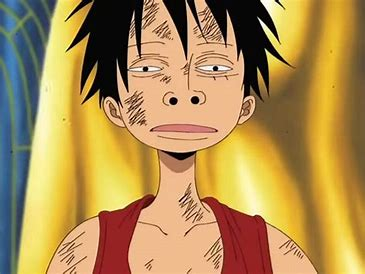

Monkey D. Luffy
Protagonista de One Piece


Sobre
Monkey D. Luffy,também conhecido como Luffy Chapéu de Palha ou Chapéu de Palha, é um pirata e o protagonista do anime e mangá One Piece.
Ele é o fundador e o capitão do cada vez mais infame e poderoso Piratas do Chapéu de Palha , bem como um de seus principais lutadores.
Seu sonho de vida é se tornar o Rei dos Piratas , encontrando o lendário tesouro deixado pelo falecido Rei dos Piratas, Gol D. Roger.Ele acredita que ser o Rei dos Piratas significa ter a maior liberdade do mundo.